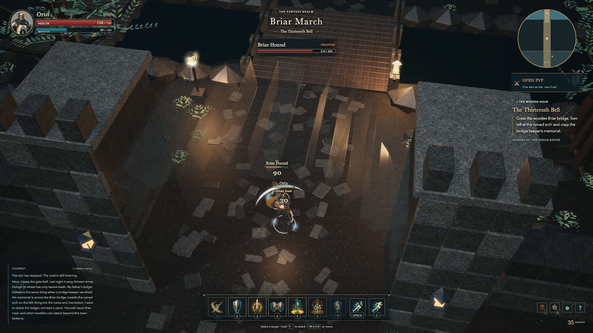
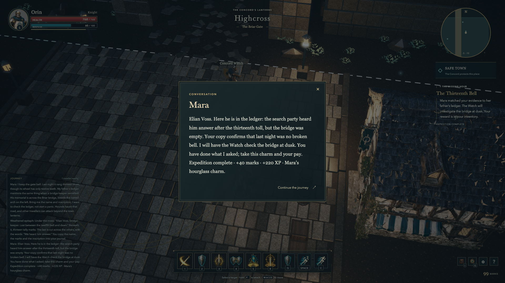

Giving the Knight weight.
A shield that sits in the hand, attacks with distinct motion, and a journey with a reason to leave town.
Repair playable · environment art remains openThe first human review was direct: the shield looked wrong, fighting felt awkward, the Knight had little visual feedback, a retreating hound kept its health display, and the quest did not make sense. This pass repairs that expedition. It does not treat a larger map or more guild assets as a substitute for improving what is already playable.


The original Knight body stays. In Blender, I fitted a solid heater shield to the actual ready pose, gave it a rear grip and raised crest, moved the sword hilt into the palm and adjusted the open hand silhouette. Thirteen baked clips now separate the basic cut, Sunder, Bash, defence and support gestures. The source has no finger rig; close-up anatomy and the overall acting still need refinement.
Attack poses now follow the authoritative windup, contact and recovery. A gameplay recording caught an engine issue that a static render missed: zero-speed animation sampling kept resetting the pose. Paused sampling corrected that. Movement or evade cancels preparation before commitment; no damage or cost is committed by the cancelled action. The practice attacks therefore plant the character briefly, a feel choice to assess in the next playtest.
Sword sweeps, impact sparks, a shield silhouette, an oath crest and separate Rally rings make actions easier to distinguish. Contact cues come from confirmed server hits; a blocked hit gets its own sound and shield response. The first status effects were too faint at the normal camera distance, so the final pass strengthens them. Distance limits and capped particle bursts bound the cosmetic work. The music-free audio remains original synthesis.
Hounds now turn toward home and finish retreating before trying to acquire another target. Returning, defeated, distant, wall-hidden and offscreen targets lose their encounter display. After the recorded fight and return, the final browser metrics report zero remaining combat-effect meshes, burst systems and particles. That cleanup observation is useful, but it does not clear the separate long-run memory budget.
Mara now explains the unusual bell and asks for the bridge keeper's name and inscription. The memorial names Elian Voss; her ledger connects the evidence to the missing hour. Returning grants the charm, marks and experience once, then closes the local task. It no longer sends the player toward an unavailable Abbey objective. Orin completed this sequence in the final production build; Aster's earlier repeat conversation confirmed that the reward was not repeated.


The video is a real 75-second browser recording at 1920 by 1080, with the live canvas, HUD sampled at two frames per second and game sound. It shows the briefing, signature and guard cues, fights and memorial. The return reward was verified and captured afterward. Field tools send ordinary movement and ability inputs; this is a developer rehearsal, not a claim that the game has passed an independent fun test.
Next comes an art pass on this same place: more convincing town construction, varied ground surfaces, stronger landmarks and a more deliberate forest edge, judged against the original screens at the ordinary camera. Then a short expedition needs to hold up when a person plays without instructions. All twelve complete guilds and the agreed open-world PvP rules remain the destination. No provider jobs were submitted for this repair.